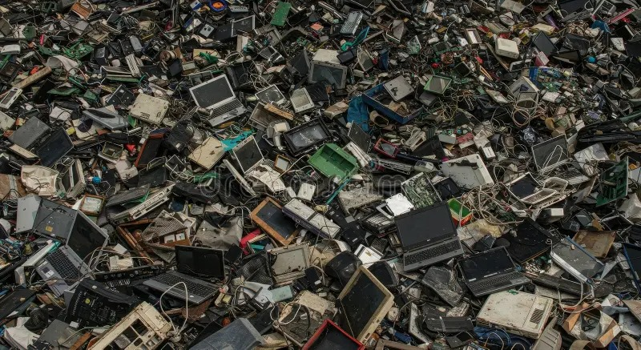
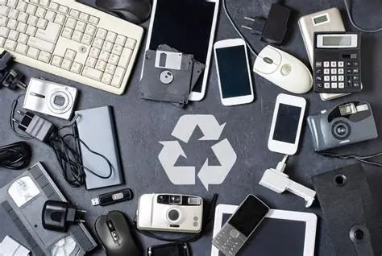
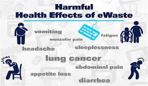
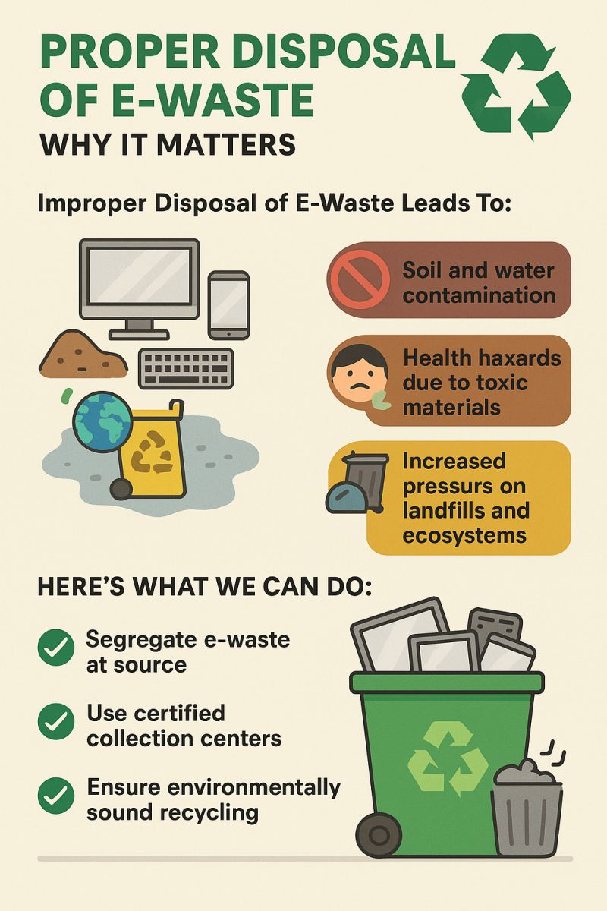

What is Electronic Waste?
Electronic waste, commonly known as e-waste, refers to any discarded electrical or electronic device and its components. This includes a wide array of items such as old smartphones, laptops, desktop computers, televisions, refrigerators, air conditioners, batteries, and even smaller gadgets like earbuds and chargers. The rapid pace of technological advancement means that devices become obsolete quickly, leading to a staggering global generation of over 53 million metric tons of e-waste annually, according to recent United Nations reports.
Improper disposal of e-waste is a growing crisis because these devices contain hazardous materials like lead, mercury, cadmium, and brominated flame retardants. When not handled correctly, these toxins leach into the soil, contaminate groundwater sources, and pollute the air through incineration. This not only disrupts ecosystems but also poses severe risks to human health, particularly in developing regions where informal recycling practices prevail. Understanding e-waste is the first step toward sustainable practices that protect both the environment and public well-being.

Key Statistics on E-Waste
- Only about 17% of e-waste is formally recycled worldwide.
- The value of recoverable materials in e-waste exceeds $62 billion each year.
- By 2030, global e-waste generation is projected to reach 74 million tons.
- Low-income communities often bear the brunt of e-waste dumping, leading to higher exposure rates.
Proper Disposal Methods
To safeguard our health and the planet, adopting proper e-waste disposal methods is essential. Unlike regular trash, e-waste requires specialized handling to prevent the release of toxins and to recover valuable resources like gold, silver, and copper.
Start by assessing your e-waste: Is the device still functional? If yes, consider refurbishing or donating it. For non-functional items, prioritize certified recyclers who follow environmental standards. Avoid curbside bins unless your locality has dedicated e-waste programs, as standard trash often leads to incineration or landfilling.
- Research Local Options: Use tools like Earth911's recycler search or check with retailers like Best Buy, Apple, or Staples for free drop-off events. Many municipalities host annual e-waste collection days.
- Secure Data: Before disposal, use factory resets, encryption software, or professional data wiping services to erase personal information. Tools like DBAN (Darik's Boot and Nuke) can securely overwrite drives.
- Segregate Components: Remove and separately recycle batteries (lithium-ion ones are fire hazards), inks, and toners. Pair this with household hazardous waste programs for items like CRT monitors containing leaded glass.
- Explore Reuse: Donate working devices to schools, nonprofits via platforms like Computers with Causes, or sell on marketplaces like eBay. Refurbished tech extends device life and reduces demand for new production.
- Advocate for Change: Support legislation for e-waste tracking and push companies toward circular economy models, where products are designed for easy disassembly and recycling.

Benefits of Proper Disposal
| Environmental | Health | Economic |
|---|---|---|
| Reduces greenhouse gas emissions by 80% compared to virgin material production | Prevents exposure to carcinogens like PCBs | Recovers $57 billion in materials annually |
| Conserves rare earth metals | Lowers rates of birth defects in recycling communities | Creates jobs in green recycling sectors |
Implications of Improper Disposal
When devices end up in unregulated landfills or are burned openly, heavy metals such as lead, mercury, and arsenic seep into ecosystems, bioaccumulating in food chains and entering human bodies through contaminated water, soil-grown produce, and inhaled particulates. This contamination cycle amplifies chronic diseases, with studies linking e-waste sites to a 30-50% higher incidence of respiratory illnesses in nearby populations.
From a neurological standpoint, mercury exposure from broken fluorescent bulbs or circuit boards can impair cognitive development in children, mimicking symptoms of ADHD or reducing IQ by up to 5 points. Respiratory issues, including asthma exacerbations, arise from dioxin emissions during informal smelting, while endocrine disruptors like phthalates contribute to reproductive health problems and increased cancer risks. In vulnerable groups, such as pregnant women or those with pre-existing conditions, these exposures can drastically reduce life expectancy and quality of life.
Globally, hotspots like Agbogbloshie in Ghana or Guiyu in China illustrate the human cost: workers dismantling e-waste bare-handed suffer from skin lesions, chronic fatigue, and elevated blood lead levels. This environmental racism disproportionately affects low-income and minority communities, widening health disparities. Moreover, polluted areas see higher healthcare costs—up to 20% more in e-waste vicinities—straining public systems and hindering medication adherence for conditions like hypertension or diabetes, as toxin-induced fatigue disrupts daily routines.
- Environmental Impact: Soil and water pollution cascades through aquatic life, leading to biodiversity loss; for example, mercury in fish exceeds safe limits in 40% of global inland waters near dumpsites.
- Health Risks: Beyond asthma and cancer, links to thyroid disorders and immune suppression; a WHO report estimates 1.5 million annual deaths tied to e-waste pollution.
- Community Effect: Vulnerable populations, like children and the elderly, suffer most, with school absenteeism rising 15% in polluted zones, impacting education and long-term healthcare access.
- Economic Ramifications: Lost productivity from illnesses costs economies billions;

Case Study: The Agbogbloshie Impact
In Ghana's largest e-waste dump, children scavenge for scraps amid toxic smoke, leading to blood lead levels 50 times above WHO thresholds. Interventions like community-led recycling co-ops have reduced exposures by 40%, proving that education and infrastructure can reverse damage.
Health Informatics Notes: Mobile Health (mHealth) and E-Waste
Mobile health (mHealth) stands out as a transformative area, utilizing smartphones, tablets, wearables, and apps to deliver real-time health interventions. From remote patient monitoring via devices like Fitbit for heart rate tracking to AI-powered apps that predict diabetes flares based on glucose logs, mHealth enhances accessibility, especially in underserved areas.
Yet, the irony is stark: the very devices powering mHealth contribute significantly to e-waste. Discarded smartphones—core to apps like MyFitnessPal or telehealth platforms—account for 70% of portable e-waste. When improperly disposed, they release toxins that undermine mHealth's goals. In polluted regions, chronic heavy metal exposure exacerbates conditions mHealth aims to manage, such as cardiovascular disease or mental health disorders. Interfering with wearable accuracy and reducing user trust in data-driven insights.
Addressing this nexus requires holistic strategies. Health informaticians can embed sustainability modules into mHealth ecosystems, like app features that track device carbon footprints or incentivize trade-ins for recycled models. Data analytics from electronic health records (EHRs) could correlate e-waste exposure with outcomes, informing policy—e.g., EPA mandates for toxin-free device designs. Moreover, blockchain for supply chain transparency ensures ethical sourcing of rare earths, reducing environmental footprints while maintaining device affordability for low-income users.
Ultimately, sustainable e-waste practices bolster mHealth's efficacy.
- Relation to Outcomes: Sustainable e-waste practices support mHealth scalability, reducing environmental health burdens and enabling consistent data collection for predictive analytics; for example, cleaner communities show 20% higher app engagement rates.
- Technological Integrations: Use IoT sensors in recycling bins to gamify disposal, feeding data back into mHealth dashboards for community health scores.
- Ethical Considerations: Address digital divides by subsidizing refurbished devices through informatics grants, ensuring AI models aren't biased against polluted demographics.
- Recommendation: Integrate e-waste education into mHealth apps via push notifications and AR simulations of pollution effects, promoting eco-friendly device lifecycles and user behavior change.

Key mHealth Tools Affected by E-Waste
| Tool | Function | E-Waste Vulnerability |
|---|---|---|
| Wearables (e.g., Apple Watch) | Activity & ECG tracking | Lithium battery leaks cause skin irritations, reducing wear time |
| Telemedicine Apps (e.g., Teladoc) | Virtual consultations | Device obsolescence limits access in remote, polluted areas |
| Medication Reminders (e.g., Medisafe) | Adherence alerts | Toxin exposure worsens conditions, ignoring reminders |
Additional Resources
Deepen your knowledge with these curated links, reports, and tools. We've selected evidence-based sources to guide further exploration, from policy briefs to interactive recyclers finders.
- EPA Electronics Recycling - Official U.S. guidelines on donation, reuse, and certified recyclers, including state-specific laws.
- Earth911 Guide - Comprehensive recycler locator and tips for handling appliances, with ZIP code search functionality.
- WHO on Digital Health (mHealth) - Global strategies for mHealth implementation, including equity and sustainability challenges.
- UNEP Global E-Waste Monitor - Latest data on generation, trade, and recycling rates, with policy recommendations.
- Greenpeace E-Waste Reports - Investigative pieces on corporate responsibility and toxic trade routes.
- ONC Health IT Legislation - U.S. policies linking informatics to environmental health protections.
All content sourced from public domain resources. Images are placeholders; replace with licensed stock photos. For hands-on learning, download the EPA's e-waste toolkit PDF for printable guides.